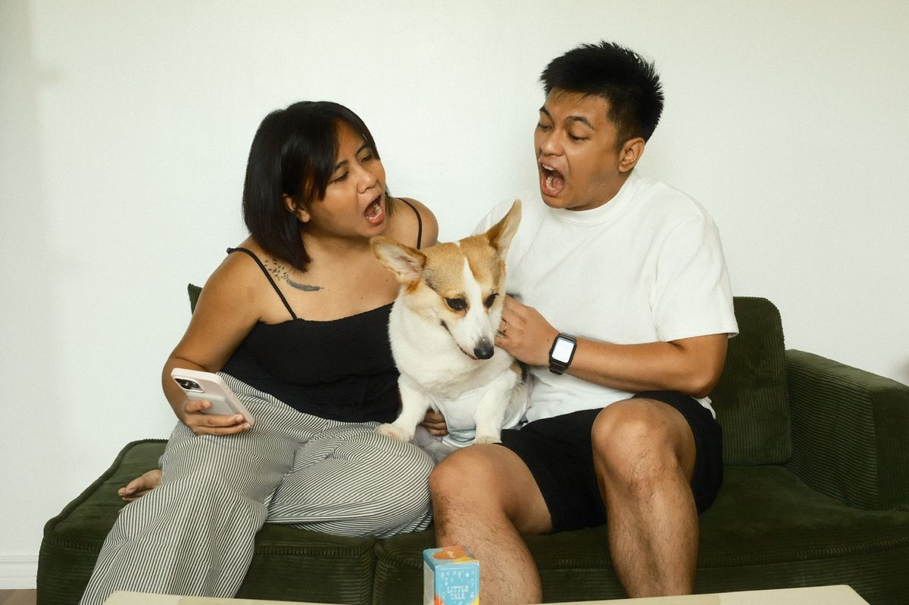

15 February 2026
Our First Marathon Experience
A personal journey of training, perseverance, and crossing the finish line
Trips, food, Holly, and whatever we got up to lately
15 February 2026
A personal journey of training, perseverance, and crossing the finish line

15 January 2024
Our first blog post introducing StudioSC and our mission